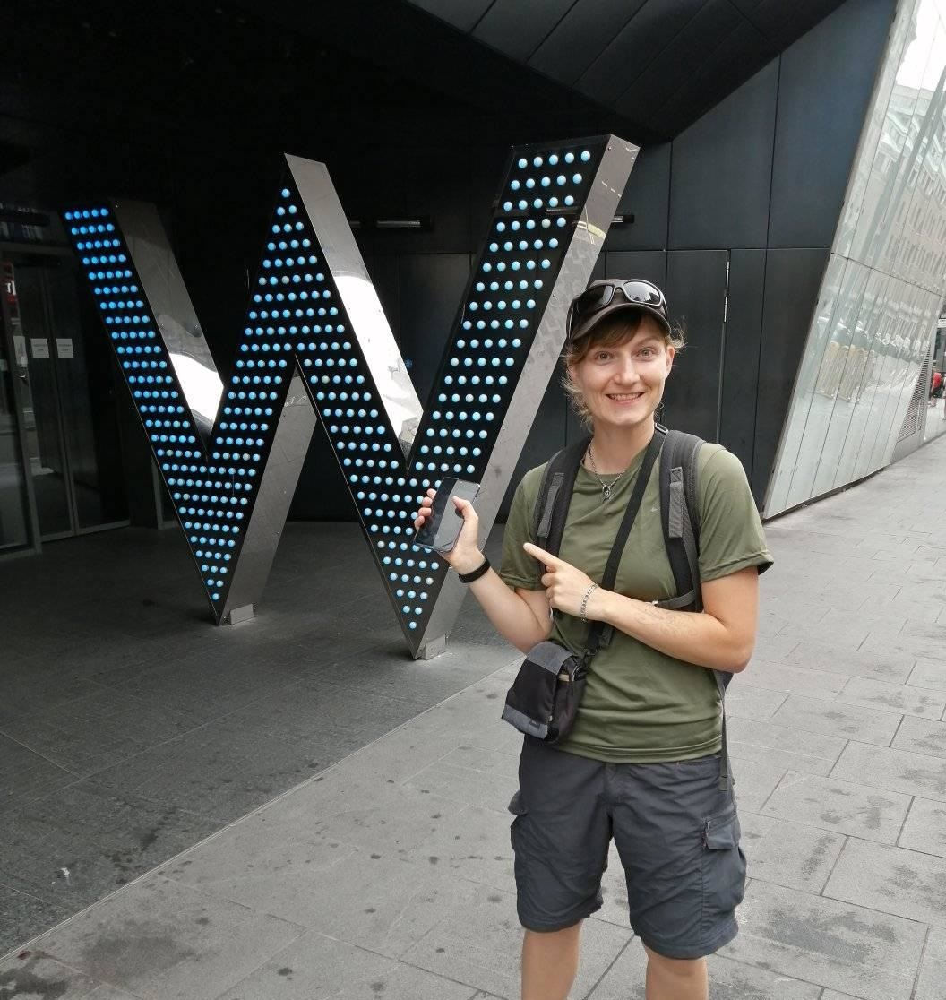
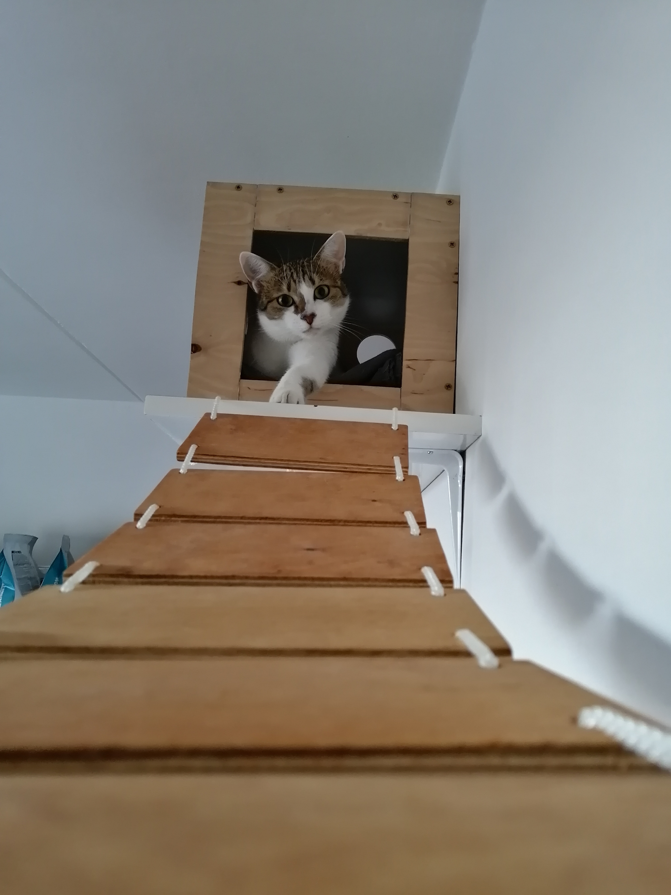
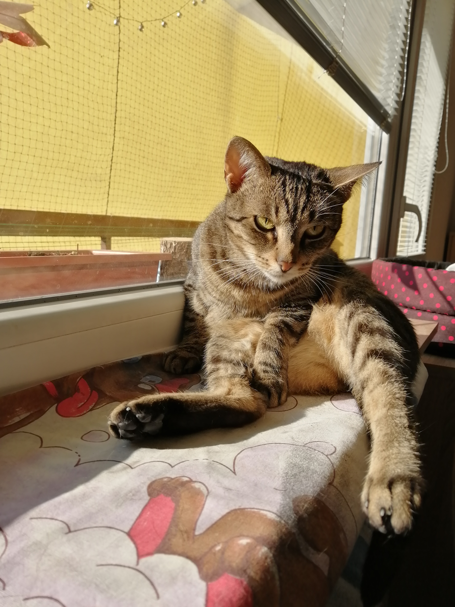

O MNĚ

Jmenuji se Vendy a pracuji ve zdravotnictvà v Brně. Práce mě docela bavÃ, ale za ty penÃze to dělat nechci, tak doufám, že se mi zadařà v tomhle odvtvà a když otevřete na jaře "akademii webu", budu netrpělivě Äekat na startovnà čáře, až mi přijde e-mail s přijetÃm do kurzu.
Jelikož se mi moc nechtělo něco vymýšlet takže ctrl+C a ctrl+V 😊
Jediný velký projekt na kterém dělám už delÅ¡Ã dobu je... a to vám neřeknu, ale docela mě trápÃ, takže doufám, že mi tenhle kurz pomůže ho dotáhnout do konce až k dokonalosti (ještě potřebuju SQL).
Jinak hraju celosvětovou hru Geocaching dÃky které se dostanu i na mÃsta, kam se jinà nepodÃvajà nebo je ani nenapadne tam jÃt (třeba do kanálu), což hodně souvisà s turistikou a s cestovánÃm.
MAZLÍČCI
Mám doma tři 🈠z toho dvě jsou Ätyřnohé a chlupaté.

Mia
Je to tÅ™Ãletá lvice. Má ráda sledovánà televize, hlavně když hraje Harry Potter. Taky ráda pozoruje svÃÄku, u které si může škvařit oboÄÃ. A úplně najradši šikanuje druhou koÄiÄku. A když ji nadávám, tak držkuje, což je vtipné.

Agi
Je taky tÅ™Ãletá, ale mourinka, hrozný salámista a mazel.
ŘÃkám ji bulimistko. Má totiž citlivé zažÃvánà a když jà něco nesedne, tak blije.
CESTOVÃNÃ
Né všechny cesty vedou z geocachingu
DÃky Geocachingu navštÃvÃme různá zákoutà mÃst, kam bychom obyÄejně nešly. Třeba v Londýně jsme prochodily celou sérii věnovanou obětem Jacka RozparovaÄe a mÃsty, kde zabÃjel. V Budapešti jsme pro změnu navštÃvily snad všechny památky, i ty zavřené. Někdy zase vyrazÃme jen do lesa na nějakou sérii, třeba v Dubňanech je hned několik sérià a táhnou se po okolnÃch lesÃch. Jsou i horské túry po hřebenech, dlouhé 120 km. SpojÃme tÃm hned dva pÅ™Ãjemné zájmy v jeden a ještě k tomu ráda fotÃm.
Můžeš ÄÃhnout na moji mapu navštÃvených a plánovaných cest.
NĚJAKÉ TO FOTO Z NAŠICH CEST
1 / 9

2 / 9

3 / 9

4 / 9

6 / 9

7 / 9

8 / 9

❮
❯